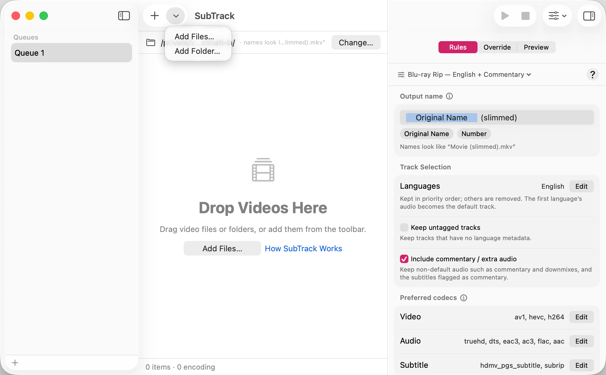

Una cola es una lista de archivos a la espera de ser aligerados, junto con las reglas que determinan qué conserva cada uno. Puedes añadir archivos de tres formas.

SubTrack lee cada archivo al añadirlo para saber qué contiene – es el breve estado Analizando de la cola. Hasta que termina, todavía no sabe qué conservará el archivo.
SubTrack busca en toda la carpeta, incluido todo lo que haya en sus subcarpetas, y pone en cola cada vídeo que encuentra. Una temporada de episodios repartidos en subcarpetas se añade de una sola vez.
Soltar una carpeta grande puede tardar un momento; SubTrack muestra el progreso mientras busca. Los archivos que no reconoce como vídeo se omiten sin avisar, en lugar de ponerlos en cola y que fallen.
Una cola es algo más que una lista. Cada una tiene sus propios archivos, sus propias reglas, su propio preajuste, su propia carpeta de destino y sus propios nombres de salida – así, una cola de películas en otros idiomas y una cola de series en inglés pueden necesitar cosas totalmente distintas sin que una afecte a la otra.
La próxima vez que abras SubTrack, las colas aparecerán tal como las dejaste, con los archivos que aún no se habían ejecutado.
SubTrack recuerda dónde está cada archivo de origen. Si lo mueves o lo eliminas después de ponerlo en cola, la fila se marca como ausente en lugar de fallar a mitad de una ejecución. Para obtener más información, consulta Si falta el archivo de origen.